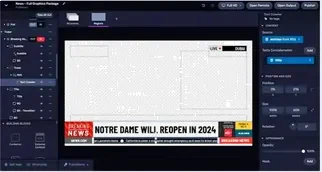

Viz Flowics
- Plataforma de creación de gráficos HTML5 basada íntegramente en la nube sin necesidad de hardware de renderizado local
- Integración directa de datos en tiempo real incluyendo redes sociales, estadísticas deportivas y resultados financieros o electorales
- Interfaz de diseño web intuitiva con funciones de arrastrar y soltar para la creación rápida de titulaciones y elementos broadcast
- Compatibilidad nativa y transparente con múltiples sistemas de producción y mezcladores de vídeo profesionales mediante integración por URL
- Control remoto multiusuario que permite a operadores deslocalizados gestionar y lanzar gráficos desde cualquier navegador web
- Arquitectura escalable optimizada para producciones remotas (REMI) y generación de experiencias interactivas con la audiencia en directo